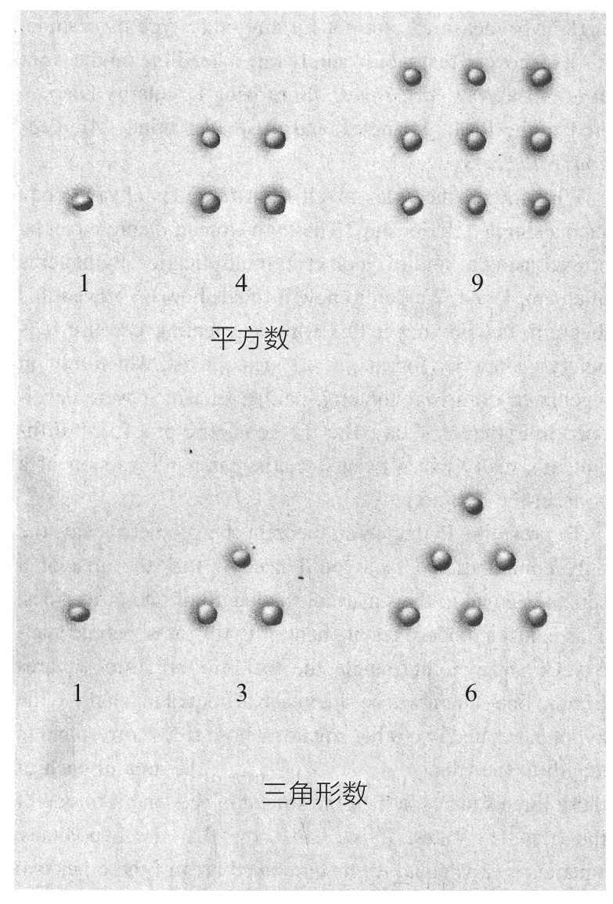
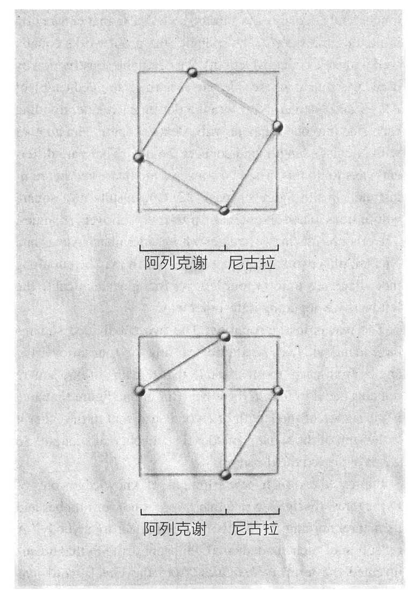
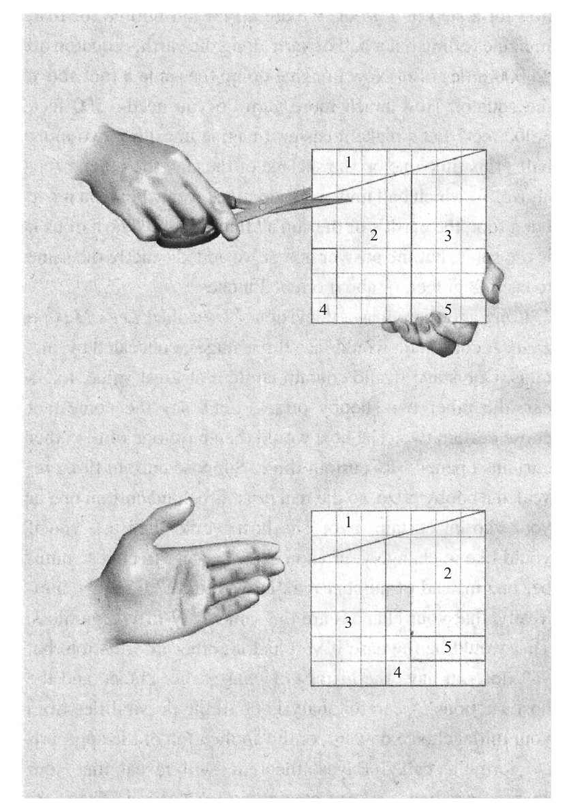
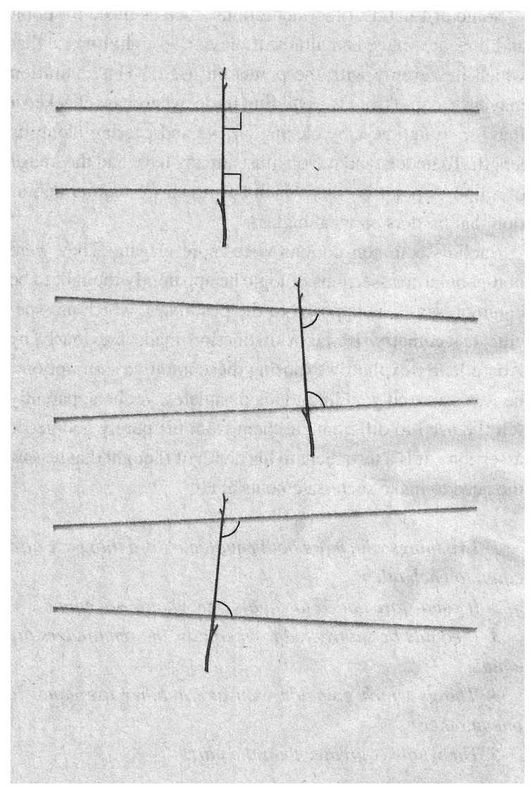

欧几里得可能并不是那个发现重要的几何学定律的人，但我们有充分的理由称他为历史上最著名的几何学家：几千年来，是他给最初窥见几何学奥秘的人们打开了一扇窗。现在，他是一名伟大的“海报男孩”，传播了人们在空间概念上的第一次伟大革命——比如抽象以及证明思想的诞生。
空间的概念很自然地产生于我们在地球上关于位置的概念。它从埃及和巴比伦人称之为“地球测量”的行为中开始发展。希腊语中称它为geometry（几何学），但主体根本不一样。希腊人最早认识到自然可以使用数学来理解——几何学不仅可以描述，还可以应用于揭示本质。古希腊人从石头和沙子的简单描述中提炼出了点、线和面的理想状态，使几何学得以进化。剥去物质的表面粉饰，他们发现了一个从未见过的拥有美丽文明的结构。在这场斗争的高潮中，欧几里得创造了数学。他的故事是一场关于革命的故事，关于公理、定理、证明和推论的起源。
希腊的成就发源于巴比伦和埃及的古代文明。叶芝写道，1巴比伦式的冷漠性格，抑制了他们取得重大成就。希腊前的人类注意到许多聪明的公式、计算和工程学的技巧，他们有时会完成惊人的壮举，但对他们所做的事情却几乎无法理解。他们也不关心这些。他们是建造者，在黑暗中工作，摸索，以他们的方式感受，在这里建立结构，在那里铺上垫脚石，实现他们的目标，而不去理解事物。
他们并不是第一个。在有史料记载之前，人类就已经在计数和计算，并应用于征税和欺骗对方。有些所谓的计算工具可以追溯到公元前3万年前，可能是艺术家们用朴素的数学直觉来装饰的树枝。但另一些则是不同的。在刚果民主共和国的爱德华湖畔，考古学家发掘出一根有8000年历史的小骨，用一小片石英卡在凹槽的一端。它的创造者，我们不能确定是一个艺术家还是数学家，在骨头的一侧刻了三个槽口。科学家认为这个骨头——称为伊尚戈（Ishango）骨2——可能是迄今为止发现的最早的数字记录设备。
对数据执行操作的想法出现得很慢，3因为计算需要一定程度的抽象化。人类学家告诉我们，许多部落，如果两个猎人射出两支箭打死两只小羚羊，然后取下两根羊肠拖着它们回到营地，“2”这个词，在每种情况下，其使用可能会有所不同。在这些文明中，你真的不能再加苹果和橘子了。人类似乎花了几千年才发现，这些都是同一个概念的实例：抽象的数，2。4
朝抽象化方向发展的第一个主要步骤发生在公元前6世纪。当时尼罗河流域的人们开始结束游牧生活，专注于在山谷耕种。非洲北部的沙漠是世界上最干旱和最贫瘠的地区之一，只有尼罗河，5因赤道地区的雨水和阿比西尼亚高地的融雪而泛滥，仿佛上帝，把生命和食物带给沙漠。在古代，每年6月中旬，原本干燥、荒凉、尘土飞扬的尼罗河流域，迎来了洪水的冲击。河面上升，河水泛滥，河水夹带着肥沃泥土在乡村四处蔓延。
早在古希腊作家希罗多德（Herodotus）描述埃及为“尼罗河的礼物”之前，古埃及法老拉美西斯（Ramses）三世曾描述埃及人如何崇拜上帝——尼罗河。埃及人叫它哈皮神（Hapi），它为他们提供蜂蜜、葡萄酒、黄金、绿松石等所有埃及人视如珍宝的东西。甚至“埃及”（Egypt）这个名字在科普特语中是“黑色土壤”的意思。6
每年，山谷的洪水泛滥会持续4个月。到了10月，这条河开始干涸，并逐渐缩小，直到次年夏天前地面再一次干旱后重新泛滥。8个干燥的月份被分成两个季节，“perit”季用来耕种，“shemu”季用来收割。埃及人开始在土堆上建立固定社区，在洪水来临时，这些土堆变成由堤坝连接的小岛。他们建立了灌溉系统和谷物储存系统。
农耕生活成为埃及历法和埃及生活的基础。面包和啤酒成了他们的主食。在公元前3500年，埃及人形成了一些较小的产业，如手工业和金属制造业。大约在那个时期，他们还发展了写作。7
人总会死亡，但随着财产的交割，税收也产生了。税收或许是几何学发展中的第一个需要。8尽管在理论上，法老拥有所有的土地和财产，事实上，在一些神殿，甚至个人都拥有房地产。政府根据每年洪水的高度和所持土地的面积来评估土地税。那些拒绝付款的人可能会被警察当场殴打。借款可以，但利率是以“保持简单”的哲学为基础的：每年百分之百的利率。9因为这关乎很多人的利益，埃及人根据不规则的土地形状开发出了相当可靠的计算正方形、矩形和梯形区域的方法。为了估计一个圆的面积，他们将它近似于一个边长是直径的8/9的正方形。这等价于把π估计为256/81或3.16，这是一个过高估计，但误差仅为0.6个百分点。所以没有纳税人抱怨这个面积误差的历史记录。
古埃及人将他们的数学知识运用到令人印象深刻的目的上。想象在公元前2580年，在狂风凛冽的荒凉的沙漠上，建筑师在一张莎草纸上画出要盖的建筑的结构。他的工作很简单，设计正方形的地基，三角形的面，哦，对了，它还必须是480英尺（1英尺约等于0.30米）高，由坚固的石块组成，每个重达2吨。他要负责俯瞰整个完整的结构。不好意思，没有激光瞄准器，没有昂贵的测量仪器，只能用一些木头和绳子。
正如许多房主所知，仅仅用木匠所使用的三角尺和卷尺来标记一个建筑物的地基或是露台的周长，是一个非常困难的任务。这座金字塔实际建造与设计仅仅一度之差。它的4个三角形平面耸立空中数百英尺高，花费了成千上万吨的岩石和成千上万人的多年劳作。它们不但汇成一个顶点，而且该顶点为一个基本规则的正四棱锥的顶点。
埃及法老被人们尊崇为神，他的军队把敌人的阳具砍下只为计数。10但他不是全能的神，比如他就不能建造弯曲的金字塔。无论怎样，埃及几何学在应用上已经成为一门很成熟的学科。
埃及人称负责测量的人为哈佩多诺塔（harpedonopta），照字面意思理解为“拉紧绳子的人”。哈佩多诺塔雇佣3个奴隶为他打理绳子。绳子在固定的距离上有绳结，所以把它拉紧，以绳结作为顶点，可以构成给定长度和角度的三角形。例如，如果你分别拉伸绳结为30码（1码约等于0.91米）、40码和50码的绳子，便会在30码和40码间得到一个直角。斜边（hypotenuse）在希腊语中最初的意思是“拉伸”。该方法看起来很简单，却十分完美而有创意。如今我们可以说，那些拉绳子的人拉出的不是直线，而是沿着地球表面的测地线。尽管有想象的成分，我们仍然可以看出，这正是我们今天用数学领域的一个分支——微分几何，来分析空间局部性质的一小部分。这就是证明了平直空间性质的勾股定理。
埃及人在尼罗河定居之时，在巴勒斯坦地区和波斯湾之间的区域，又一个文明诞生了。11它始于公元前4000年的美索不达米亚地区， ；该地区位于底格里斯河和幼发拉底河之间。公元前2000年至公元前1700年之间的某个时间，生活在波斯湾北部的非闪米特人征服了南方的邻居。他们胜利的统治者汉谟拉比，以巴比伦城来命名这个统一后的王国。我们可以将一个比埃及人更成熟的数学体系归功于巴比伦人。12
假如有外星人通过超级望远镜从234000000亿英里（1英里约等于1.61千米）外观察地球，可以观察到当时巴比伦人和埃及人的生活习惯。但对于我们这些困在地球上的人来说，把史实拼凑在一起难度要大很多。我们知道埃及数学主要有两个来源：一是莱茵特纸草书（Rhind Papyrus），因A.H.莱因特将其捐赠给大英博物馆而命名；二是莫斯科纸草书（Moscow Papyrus），保存于莫斯科美术博物馆。关于巴比伦人的最新证据来自尼尼微13（古代亚述的首都）的废墟，在那里发掘出1500块泥板。不幸的是，没有一块包含数学文本。幸运的是，在亚述地区出土了几百块泥板，主要来自尼普尔和基思（Kis）的废墟。如果说翻遍废墟就如同在书店里搜寻，那么这些书店都包含了与数学有关的部分。废墟中涵盖了有参考价值的表格、教科书和其他一些能揭示巴比伦数学思想的物品。
例如，我们知道，巴比伦人的工程师不仅仅在项目中投入人力。比如挖一条运河，他会注意到运河横截面为梯形，计算有多少体积的土需要移动，考虑每人每天的挖掘量，得出这份工作所需的日工人数量。巴比伦放贷者甚至计算复利。14
巴比伦人不写方程式。他们所有的计算都被表述为文字问题。例如，其中一块泥板上有着精彩的记录，“长度为四15，对角线为五，宽度是多少？它的大小未知。四乘以四等于十六。五乘以五等于二十五。你从二十五个中拿走十六个，剩下九个。为了得到九我应该乘以多少？三乘以三等于九。三是宽度。”今天，我们会写“x2=52-42”。对问题进行冗长陈述的缺点是，它缺乏简洁性，不如写方程式让人一目了然，而在当时应用代数规则也不是那么容易。
数千年后这一特殊的缺点才被纠正：最早使用加号来表示相加关系，出现在1481年的一份德国手稿中。
上面的记录表明，巴比伦人似乎已经知道了勾股定理：对于一个直角三角形，斜边的平方等于直角边的平方和。埃及人拉绳索的技巧似乎表明他们也知道这一关系。但是巴比伦抄写员们在他们的泥板上写满了令人印象深刻的三个一组的数字表。
他们在泥板凹陷处记录下数组，如3、4、5，5、12、13。但也有一些大数字如3456，3367，4825。随机找3组数满足这样的关系，概率是很小的。例如，在1，2，……，12这12个数字中，有成百上千的方法选择不同的3组数；但只有3、4、5这一组满足勾股定理。除非巴比伦人使用了大量人力让他们一生都在做这样的计算，否则我们就可以得出结论，他们找到这些三元数组是因为掌握了足够多的基本数论知识。
尽管如此，埃及人的成就和巴比伦人的聪明才智，对数学的贡献仅限于为后来的希腊人提供了一些数学事实和经验法则。他们就像传统的野外生物学家一样，耐心地对物种进行分类，而不是像现代遗传学家一样，试图了解有机体是如何发展和运作的。例如，尽管两个文明都知晓勾股定理，但没有一个总结出我们今天写出的a²+b²=c²的一般形式（c是直角三角形斜边的长度，a和b是其他两条直角边的长度）。他们似乎从未思考过为什么这样一个关系得以存在，或思考如何从它推导出更多的关系。这是精确的吗，或者只是一个近似关系？从原则上讲，这是一个有争议的问题。但更实际地讲，谁在意这样的问题呢？在古希腊人出现之前，没有人在乎。
考虑一个问题，它是古希腊人最头痛的问题，却丝毫没有困扰到埃及人或巴比伦人。非常简单。给定一个边长为1单位的正方形，对角线的长度是多少？古巴比伦人计算为1.4142129（转为十进制记数法）。这个答案在三个六十分之一的地方是准确的（巴比伦人使用六十进制）。古希腊人的毕达哥拉斯学派意识到这个数字不能被写成一个整数或分数，我们今天知道，这意味着它是没有固定模式的无限小数：1.414213562……这对希腊人造成了巨大的创伤，关于比例的宗教危机，让至少一名学者因此被谋杀。谋杀的原因是关于2的平方根的值，为什么呢？答案就在伟大的希腊主流思想中。
发现数学不仅仅是计算泥土体积或税收，要归功于2500多年前一个从商人转做哲学家的孤独的希腊人，他叫泰利斯。16是他为毕达哥拉斯学派的伟大发现奠定了基础，并最终导致欧几里得写出《几何原本》。他生活在这样一个时代，那时在世界各地，知识的钟声以各种方式敲响，唤醒了人类的思想。在印度，出生于公元前约560年的释迦牟尼，开始传播佛教。在中国，老子和他同时代出生于公元前551年的孔子，在思想发展上产生重大成果。在希腊，所谓的黄金时代也开始了。
小亚细亚西海岸附近有一条叫米安德（Meander）的河流，因河流蜿蜒而得名，流入一片荒凉的位于今天土耳其地区的沼泽平原。大约2500年前，沼泽中曾经是当时最繁荣的希腊城市，米利都。当时，它是爱奥尼亚地区的一座沿海城市，位于现在已经被淤泥填满的海湾。
米利都被山和水所封闭，只有一条通往内陆的便利路线，但至少有4个港口，是东爱琴海的海洋贸易中心。从这里，船只向东经过一系列岛屿和半岛，行驶至塞浦路斯南部、腓尼基和埃及；向东则行驶至欧洲的希腊。
公元前7世纪，这座城市里发生了一场人类思想的革命，人们反对迷信，反对对事件进行草率定论。这场暴动持续了近千年，并形成了现代演绎法的基础。
我们对这些具有开创性的思想家的认识，往往源于后来的学者，如亚里士多德和柏拉图的著作，它们带有偏见，有时是相互矛盾的。
这些传奇人物中大多数是希腊人，但他们不认可希腊神话。根据流传下来的故事，他们经常被迫害，流放，甚至自杀。
尽管有不同的说法，但在公元前640年左右的米利都，有一对父母生下了叫泰利斯的男婴，人们普遍认为这是一个里程碑。泰利斯常被称为世界上第一个科学家或数学家。这种职业出现得太早，显然不能威胁到当时传统行业的首要地位，比如，作为性交易的一部分，男性为了性满足所用的皮革垫，也是米利都比较有名的产业。17我们不知道泰利斯是做这些交易，还是做咸鱼、羊毛等米利都热卖的商品交易，但他是一个富有的商人，他可以使用现金来做任何他喜欢做的事，比如退休后致力于研究和旅行。
古希腊由一些政治上独立的小城邦组成。有些是民主的，有些由小贵族或暴虐的国王控制。
古希腊人民的日常生活中，我们最了解的是雅典人的生活，他们在赫楞（相传为希腊人的祖先）时期就有许多相似之处，在泰利斯后几个世纪几乎没有改变，除了饥荒和战争时期。希腊人似乎喜欢社交：去理发店、逛寺庙、逛集市。苏格拉底很喜欢一家鞋匠店。第欧根尼·拉尔修（希腊哲学家）曾经写过一个叫西蒙的补鞋匠，他是把苏格拉底的言论以对话形式记录下来的第一人。在一家存有公元前5世纪遗骸的商店里，考古学家还发现酒杯的一小块上刻着西蒙的名字。18
古希腊人也喜欢开晚宴。在雅典，晚饭通常在讨论会之后，不夸张地说其实就是“群聚喝酒”。狂欢的人们将葡萄酒一饮而尽，讨论哲学，唱歌，说笑话和猜谜语。那些猜谜失败或者犯了各种各样错误的人会受到惩罚，比如在房间里裸体跳舞。如果说希腊的聚会是为了缅怀学园生活，那是因为他们十分重视知识，喜欢探究未知。
泰利斯似乎对学习有着永不满足的渴望，这也是许多希腊人的特质并造就了希腊人的黄金时代。在前往巴比伦的旅途中，他学习了天文学和数学原理，并将这些知识带到希腊，获得了当地的好名声。他有一项传奇成就——预测公元前585年发生的日食。希罗多德告诉我们，发生于战争时期的日食促使人们迅速结束战争，并带来持久的和平。
泰利斯也在埃及投入了大量的时间。埃及人拥有建造金字塔的专业技能，但缺乏测量金字塔高度的洞察力。泰利斯对埃及人从经验中发现的事实寻求理论解释。这样一来，泰利斯得以从一个几何定律推导出另一个，或者套用别的问题的解决方案，因为他已经从特定的实际应用中提取出抽象原理。他利用相似三角形的性质向埃及人展示了如何测量金字塔的高度，19他们十分震惊。后来他又使用类似的技术来测量一艘船在海上的距离。他在古埃及成了名人。
在希腊，泰利斯被他的同时代人命名为7位圣人——世界上最聪明的7个人之一。考虑到当时普通人较为原始的数学能力，他的功勋更令人印象深刻。例如，几个世纪之后，伟大的古希腊思想家伊壁鸠鲁依然认为太阳无非是一团火球，而且和我们看到的一样大。20
泰利斯向几何学的系统化迈出了第一步。他第一次对几何学定理进行证明，就是几个世纪之后欧几里得收集于《几何原本》中那样的定理。决定哪些定理会推出另外一些定理，需要制定一系列规则，由此泰利斯发明了第一个逻辑推理系统。他首次考虑了空间图形的全等概念——如果在同一平面上平移和旋转一个图形可以与另一个相重合，即可认为这两个图形相等。将相等的概念从数字扩展到空间对象，是把空间进行数学化的一个巨大飞跃。这一点在当时并不像我们在早年上学时学的那样显而易见。事实上，正如我们所看到的，它涉及同质性的假设，即一个图形在移动时既不变形也不改变大小，当然这在所有空间中都不成立，包括我们自己的物理空间。泰利斯用埃及人的“地球测量”（earthmeasurement）来命名他发明的数学，21但希腊人称之为几何学（geometry）。
泰利斯断言，通过观察和推理，我们应该能够解释自然界发生的一切。他最终得出了一个革命性的结论——自然界是遵循一定规律的。雷鸣不是愤怒的宙斯所发出的巨大声响，一定有更好的解释可以通过观察和推理获得。在数学中，关于自然现象的结论应该通过规则来验证，而不是猜测观察。
泰利斯还谈到了物理空间的概念。他认识到，世界上所有的物质，尽管种类繁多，但本质上是一样的东西。22在没有任何证据的情况下，这是一种惊人的直觉跳跃。很自然地，下一个问题就是，这基本的东西是什么？生活在港口城市，23直觉让泰利斯选择水作为基本元素。具有讽刺意味的是，泰利斯的学生Milesian和他的同伴Anaximander，他们的直觉来自于人类从低等动物进化而来的进化论观点，从而选择鱼作为基本元素。
当泰利斯进入虚弱的老年时期，出于对自己衰老的恐惧，他见了欧几里得几何学最重要的先驱者，来自萨摩斯的毕达哥拉斯。萨摩斯曾经是一座大城市，坐落于爱琴海的萨摩斯岛，离米利都不远。今天到岛上的游客仍然可以找到一些破碎的柱子和一块可以俯瞰古代港口遗址的玄武岩。在毕达哥拉斯时代，这座城市十分繁华。毕达哥拉斯18岁时，他的父亲去世了。他的叔叔给了他一些银币和一封介绍信，把他打发到附近的莱斯博斯岛（Lesbos）去拜访哲学家费雷杰斯，该岛名也是女同性恋（lesbian）这个词语的由来。
据传，费雷杰斯研究了腓尼基人的秘密书籍，并向希腊引入了对灵魂不朽的信仰，这也成为毕达哥拉斯的宗教哲学的基石。毕达哥拉斯和费雷杰斯成为了终身的朋友，但毕达哥拉斯并没有在莱斯博斯岛待太久。到20岁的时候，毕达哥拉斯来到米利都，在那里见到了泰利斯。
历史上的图片中，24毕达哥拉斯是一个年轻的男孩，有着平直的长发。他没有穿传统的希腊长袍，而是穿着裤子，像古代的嬉皮士一样去拜访著名的老圣人。那时的泰利斯认识到自己早年的辉煌已淡去，也许在男孩身上看到年轻时的自己，他为自己精神状态不佳而表示歉意。
我们几乎不知道泰利斯对毕达哥拉斯说过什么，但我们知道他对这位年轻的天才有很大的影响。
泰利斯死后的几年，人们有时会发现毕达哥拉斯坐在家里，唱着歌颂已故先驱的歌曲。所有关于这次见面的描述中，有一点是一致的：泰利斯给了毕达哥拉斯如同霍勒斯·格里利（美国著名激进报人）一般的待遇，但并没有告诉他要向西行，而是向这位年轻人推荐了埃及。
毕达哥拉斯听取泰利斯的建议，25去了埃及。但在那里，他并没有在埃及数学中找到诗意。在希腊，几何对象往往被形容为物理实体。线是哈佩多诺塔们拖拽的绳子，或是一块区域的边缘。长方形是一块土地的边界或一块石头的表面。空间可以是泥浆、土地和空气。对于希腊人（而不是埃及人）来说，将浪漫和隐喻引入数学的想法是值得赞扬的：空间可以是一种数学抽象，同样也可以应用到许多不同的环境中。有时候一条线就是一条直线，但是同样的线可以代表一座金字塔的边缘，一块区域的边界，或者是乌鸦飞行的路径。知识是可以举一反三的。
据传说，有一天，毕达哥拉斯散步到一家铁匠铺，这时他听到各种锤子敲打着沉重的铁砧的声音。他不由得陷入思考。在对各种弦进行了一些实验之后，他发现了和声的递进，以及振动弦的长度和它发出声音的音高之间的关系。例如，一条弦的长度是原来的两倍，则发出的音高是原先的一半。这是一种简单的观察，却是一种深刻的革命，人们认为这是人类发现自然法则的第一个例子。
想象数百万年前，当某个人发出了“呀”或“哼”的声音后，另一个人说了句固定短语。26这短语如今已经失传，但大概就是“我知道你的意思”的意思。那时，语言的概念已经出现。在科学领域，毕达哥拉斯的“谐波定律”具有同样的里程碑式的意义，这是人类第一次将物理定律用数学形式来表达。必须知道一点，在他所处的时代，人们并不知道简单数字现象背后的数学原理。比如毕达哥拉斯学派发现把一个矩形的两边长度相乘便得到它的面积。
对于毕达哥拉斯来说，数学的许多有趣之处来自于他和他的追随者发现的许多数值上的模式。毕达哥拉斯学派把整数想象成小石子或小点，它们在特定的几何图形中排列。他们发现，将鹅卵石铺成两行两列，三行三列，以此类推，这样的阵列能形成一个正方形。毕达哥拉斯学派把这类可以排成正方形的石子数量称为“平方数”，这也是为什么我们如今把这些数字称为“平方”的缘故，比如4，9，16等。至于其他数字，他们发现可以把石子排布成第一行1个，第二行2个，第三行3个，以此类推，来形成一个三角形，例如3，6，10等。
平方数和三角形数的性质让毕达哥拉斯深深着迷。例如，第二个平方数4，等于前两个奇数1+3之和；第二个平方数9，等于前三个奇数1+3+5之和，等等（这对第一个平方数1也成立，因为1=1）。发现所有平方数都等于连续奇数之和时，毕达哥拉斯注意到，同样地，所有三角形数等于连续整数之和，包括奇数和偶数。而且，平方数和三角形数是可以联系起来的，如果你把两个相邻的三角形数相加，就会得到一个平方数。
勾股定理，看上去也十分不可思议，想象一个古代学者仔细研究每一种类的三角形，而不只是罕见的直角三角形，测量它们的角度和边长，旋转它们并进行比较。如果有人这样研究，大学里很可能有一个专门的学科。“我的儿子是伯克利分校的数学老师，”某个母亲会自豪地说，“他是研究三角形的专家。”有一天他的儿子发现一个神奇的规律，每个直角三角形的斜边平方都等于两条直角边的平方和。这对大的、小的、胖的、瘦的直角三角形都成立，但对其他三角形却不成立。这绝对是值得《纽约时报》头版头条登出的重大发现：“直角三角形令人震惊的性质！”加上副标题“其应用还需多年”。

勾股定理的小石子图案
为什么直角三角形的边遵循这样一个简单的关系？可以用毕达哥拉斯经常用的一种几何学上的乘法运算来证明毕达哥拉斯定理。我们不知道毕达哥拉斯本人是否就是用这种证明方法，但这样证明非常直观，因为是纯几何意义上的证明。如今，人们想出了更简单的证明方法，用代数甚至三角函数，但在毕达哥拉斯时代它们都还没有被发现出来。但几何学证明真的不难，实际上只不过是一个曲解数学家连点成线作法的版本。
为了用纯几何方法证明勾股定理，你唯一需要知道的计算事实是一个正方形的面积等于边长的平方。这也是毕达哥拉斯的小石子计数法在现在的陈述。给定一个直角三角形，目标是由它伸展出3个正方形：边长分别等于这个直角三角形的斜边和两个直角边的长度。如果我们能证明斜边的平方，也就是斜边延展出的正方形的面积等于其他两个正方形的面积之和，那么我们就证明了勾股定理。
为了更简单一点，我们给三角形的三条边分别取名字。斜边（hypotenuse）已经有了名字，虽然很冗长，我们依然保留，只是将首字母大写以区分我们这一条特别的边，即把hypotenuse写成Hypotenuse。把另两条边取名阿列克谢和尼古拉。巧合的是，这是本书作者两个儿子的名字。写到这里的时候，阿列克谢长得更高一些，而尼古拉较矮，此后我们都沿用这个习俗来命名三角形的边（该证明对两条直角边相等的直角三角形也同样适用）。首先我们画一个正方形，其边长是阿列克谢和尼古拉之和。接着，在每边取一个点，把边分成两部分，其边长分别是阿列克谢和尼古拉，最后把点连成线。这样做有很多种方法，我们感兴趣的两种方法展示在第15页的图中。其一是一个以直角三角形斜边为边长的正方形，加上四个可以补齐的三角形。其二是两个正方形，边长分别为阿列克谢和尼古拉，加上两个可以补齐成大正方形的长方形。接着把长方形沿着对角线切割成4个三角形，大小和第一种方法里的三角形一样。
剩下的只是拼接了。两个被切割的大正方形面积相等，所以把它们去掉4个三角形之后，剩余的部分面积也相等。在第一张图中剩余正方形的面积是斜边长的平方，而第二张图中剩余两个正方形的面积是边长阿列克谢和边长尼古拉的平方和。这样我们就证明了这个定理！
如此成功的定理的确让人印象深刻，毕达哥拉斯的一个门徒这样写道27：“如果不是因为数字和它的种种性质，世界上任何现存的事物对人们来说都是不清晰的。”为了表达毕达哥拉斯学派的基本哲学思想，他们发明了“数学”（mathematics）这个词，源于希腊语mathema，意为“科学”（science）。这个词的起源反映了这两个学科之间的紧密联系。尽管今天的数学和科学有着明显的区别，但我们将看到，直到19世纪这区别才变得明显起来。

勾股定理
聪明的谈话和废话之间也有区别，毕达哥拉斯并不是总能区分这一点。
毕达哥拉斯对数字关系的敬畏使他形成了对数字占卜的神秘信仰。他首次把数字分类为“奇数”和“偶数”，但他又做了更个性化的一步：把奇数称为“阳性的”，把偶数称为“阴性的”。他把具体数字与概念相联系，例如1是推理，2是观点，4是正义。
由于他的系统4是由正方形表示的，所以把正方形与正义联系在一起，这就是我们今天仍在使用的这个表达的来源，如“公平交易”（a square deal）。为了给毕达哥拉斯合理的历史定位，人们必须认识到，一个人是有才还是只在说废话，用几千年的视角来判断要容易得多。
毕达哥拉斯是一个有魅力的人物，是一个天才，同时他也是一个很好的自我推销者。在埃及，他不仅掌握了埃及的几何学，而且成为第一个学习埃及象形文字的希腊人，并最终成为一名埃及牧师，或者相当于，得以参与他们的神圣仪式。这使他能知晓一切秘密，甚至可以进入庙宇的密室。他在埃及待了至少13年。离开并非他所愿——波斯人入侵埃及并俘虏了他。毕达哥拉斯在巴比伦登陆并最终获得了自由，接着全面学习了巴比伦数学知识。他终于在五十岁的时候回到了萨摩斯。当毕达哥拉斯回到家乡时，他已经综合了当时所有关于空间和数学的哲学理论并打算传播，他所需要的只是一些追随者。
他对象形文字的了解使许多希腊人相信他有特殊的能力。他希望关于他的传说能使人们将他与普通公民区分开来。其中一个离奇的故事是他攻击一条毒蛇并咬死了它。28另一个传闻是一个小偷闯入毕达哥拉斯的家，看到了一些奇怪的东西，这让小偷空手而逃并拒绝透露他看到了什么。毕达哥拉斯的大腿上有一个金色的胎记，他把它作为神性的象征。萨摩斯的人不是很容易受到他的说教的影响，所以毕达哥拉斯很快就离开了，去了一个不那么世故的地方，叫克罗顿，一个希腊人殖民的意大利城市。在那里，他建立了追随者的“社团”。
毕达哥拉斯的生活传奇得以传播，许多方法与后来有超凡能力的领袖耶稣相似。很难说关于毕达哥拉斯的神话传说没有影响到后来关于基督故事的创作。例如毕达哥拉斯，很多人相信他是上帝之子，29在基督的故事中，上帝之子是阿波罗。他的母亲叫帕提诺斯，意为“处女”。在去埃及之前，毕达哥拉斯曾在卡梅尔山上过着隐士的生活，就像在山上的基督独自守夜一样。有一个犹太教派，叫艾赛尼派，盗用了这个神话，据说后来与施洗约翰有了联系。还有一个传说是毕达哥拉斯从死里复活，尽管据传毕达哥拉斯是藏在一个秘密的地下室里伪造了这个故事。许多关于基督的不可思议的力量和事迹都要归功于毕达哥拉斯：据说他能一次出现在两个地方；他可以让水面平静和控制风；他曾经受到神圣声音的问候；他有在水上行走的能力。30
毕达哥拉斯的哲学也与基督有一些相似之处。例如，他鼓吹你应该爱你的敌人。但在哲学上，他更接近与他同时代的释迦牟尼（约公元前560～前480年）。他们都相信转世，31人可能转世成动物，所以即使是动物也可以被曾经的人类灵魂所居住。因此，这两种观点都认为所有生命都有很高的价值，反对拿动物祭祀，并提倡严格的素食主义。据传，毕达哥拉斯曾经拦住一名打狗的男子，32告诉他这只狗是自己上辈子的老朋友。
毕达哥拉斯认为，财产妨碍了对神圣真理的追求。那个时期的希腊人有时会穿羊毛和各种颜色的服装。富裕的男人们偶尔会把斗篷披在肩膀上，用金针或胸针系上，骄傲地展示他们的财富。毕达哥拉斯拒绝奢侈，禁止他的追随者穿除了白色亚麻布之外做成的衣服。
他们不去挣钱，而是依靠克罗顿（Croton）平民的慈善事业，也许还有他的一些追随者的财富，将财产集中起来，过着公有制的生活。很难确定他的组织的性质，因为那个时代当地的风俗以及人的看法与现在是如此不同。例如，毕达哥拉斯把他们和普通人区分开来的两种方式是不随地小便和不在别人面前做爱。33
保守秘密在毕达哥拉斯社团中十分重要，也许是源于他曾当过埃及祭司的秘密体验。也许是为了避免在革命性想法公之于众时导致反对意见，造成麻烦。其中有一项发现需要极端保守秘密，据传说，对泄露秘密的人采取处死惩罚。
回想一下确定单位正方形对角线长度的问题。34巴比伦人将其计算到6位小数，但对毕达哥拉斯学派来说，这还不够好。他们想知道它的确切值。如果你不知道确切值，怎么能假装知晓一个正方形里面有多少空间呢？问题是，尽管他们能得到越来越精确的估计值，但都不是确切答案。不过毕达哥拉斯学派并不容易被吓倒。他们富有想象力地问自己，这个精确数字存在吗？他们得出结论是不存在，并独创性地证明了这一点。
今天，我们知道对角线的长度等于2的平方根，是一个无理数。这意味着它不能以十进制形式写成小数形式，或者等价地，它不能被表示为一个完整的整数或分数，而毕达哥拉斯学派只知道这两种数。
显然，毕达哥拉斯遇到了麻烦。一个正方形的对角线的长度不能表示为任何数字，这一事实很糟糕，对一个高瞻远瞩地宣传数字就是一切的人来说。他是否应该改变他的哲学：除了表示某些非常神秘的几何大小，数字就是一切？
毕达哥拉斯本可以将实数系统的发明提前几个世纪，只要他做一件简单的事情：给定对角线的名称，比如说d，或者更好的符号2，并且把它当成一种新的数。如果他这样做了，他可能已经抢先开始了笛卡儿的坐标革命，因为描述这一新的数的类型很可能需要发明数轴。但相反，毕达哥拉斯放弃了将几何图形与数联系起来的这一有前途的尝试，并宣称有些长度不能用数表示。毕达哥拉斯学派把这样的长度称为alogon，意为“不可公度比”（notaratio）长度，我们今天把它说成“无理的”（irrational）。alogon这个词有双重含义：它也意味着“不可言说”（not to be spoken）。毕达哥拉斯以为他的学说解除了困境，而且很难被推翻，因此，根据全部学说保密原则，他禁止追随者透露这个令人尴尬的悖论。35但并不是所有人都听从。据传说，他的一个追随者希帕苏斯（Hippasus）泄露了这个悖论。今天人们被谋杀的原因有很多——爱情、政治、金钱、宗教——但没有人因为告密了2的平方根而死。然而对于毕达哥拉斯学派来说，数学是一种宗教，因此，当希帕苏斯打破必须沉默的誓约时，他被暗杀了。
这种对无理数的抵制持续了几千年，直到19世纪晚期，当时德国数学天才康托尔（Georg Cantor）在前人基础上做出了开创性的工作。他的前任老师利奥波德·克罗内克是一个性格乖戾的人，他“反对”这种不合理的东西，他非常不同意康托尔的这个观点，事事为难他，破坏他的事业。康托尔无法忍受这一点而崩溃，36他生命的最后几天在精神病院度过。
随后毕达哥拉斯在困顿中离世。大约在公元前510年，一些毕达哥拉斯学派的人来到附近的一个叫西巴利斯（Sybaris）的城市，表面上他们是在寻找追随者。除了他们都被谋杀了之外，此行的细节记录很少。后来，一群西巴利斯人逃到克罗顿，逃离了刚在城里掌权的暴君特拉斯（Telys）。特拉斯命令他们回国。毕达哥拉斯打破了他的一个基本原则：远离政治。他说服克罗顿人不要驱逐流亡者。一场战争爆发了，克罗顿人赢了，但对毕达哥拉斯来说，损失已经造成。他现在有了政治上的敌人。大约在公元前500年他们袭击了他的组织。毕达哥拉斯逃跑了。目前还不清楚他之后发生了什么：大多数消息来源说他自杀了；另一些人说他平静地度过了几年，并在一百岁左右死去。
毕达哥拉斯的社团在被袭击后维持了一段时间，直到公元前460年，又一次进攻屠杀了他的几个追随者。直到公元前300年，他的学说以某种形式得以保存下来。在基督诞生前一百年，他的学说被罗马人复兴，并成为罗马帝国的统治力量。毕达哥拉斯主义影响了当时的许多宗教，例如亚历山大犹太教、古埃及的古老宗教和我们现今看到的基督教。公元2世纪，毕达哥拉斯学派的数学与柏拉图学派相结合，获得了新的动力。公元前4世纪，东罗马帝国皇帝查士丁尼（Justinian）再次对毕达哥拉斯学派的后裔们进行了打击，罗马人憎恨毕达哥拉斯的希腊哲学家们。他们留长发和胡须，37他们使用毒品，如鸦片，更不用提他们不信基督教。查士丁尼下令关闭学院并禁止教授哲学。毕达哥拉斯主义接着留存了几个世纪，于公元600年的黑暗时代消失。
公元前300年左右，在地中海的南部海岸、靠近亚历山大城的尼罗河以西，住着一名学者，他的工作可以与《圣经》相提并论。他的方法影响了哲学的发展，并定义了19世纪前的数学本质。他的工作成果成为当时高等教育不可或缺的内容，至今仍然如此。中世纪欧洲文明的复兴得益于对此人工作的重建。
斯宾诺莎效仿他。38亚伯拉罕·林肯研究他。康德为他辩护。
这个人的名字叫欧几里得。人们对他的一生几乎一无所知。他吃橄榄吗？他看戏剧吗？他是高还是矮？历史难以回答这些问题。我们所知道的是，39他在亚历山大城开办了一所学校，有才华横溢的学生，对唯物主义不屑一顾，似乎是个很好的人，至少写了两本书。其中一本已然失传的书是关于圆锥曲线的，研究一个平面和一个圆锥的交点产生的曲线，这成了阿波罗尼奥斯（Apollonius）后来重大工作的基础，40极大地促进了航海学和天文学的发展。
他的另一本著作《几何原本》是有史以来人们最广为阅读的“书”之一。《几何原本》有着类似电影《马耳他之鹰》（The Maltese Falcon）一样曲折的历史。41首先，它实际上不是一本书，而是一套13卷的羊皮纸。这些原始版本没有一个幸存下来，即便后来的一系列版本流传下来，但在黑暗时代几乎完全消失。欧几里得作品的前四卷并不是原始的《几何原本》，而是一位叫希波克拉底（Hippocrates）的学者（不是那个同名的希腊医生）在公元前400年写的一部作品，也叫《几何原本》（Elements），人们认为这大部分就是欧几里得作品中的内容。
《几何原本》中收集的内容都没有经过授权，欧几里得没有声明所有定理的原创性。他认为他的角色是组织和系统化希腊人对几何学的理解。他最先通过纯粹思维来全面描述二维空间的性质，丝毫不涉及物理世界。
欧几里得《几何原本》最重要的贡献在于其创新性的逻辑推理方法：首先，通过写下精确的定义来明确术语概念，从而确保对所有词语和符号的一致理解。接下来，通过阐明明确的公理或假设（这些术语是可互换的）来明确概念，避免使用未声明的理解或假设。最后，推导出系统的逻辑结果，只采用公认的逻辑规则，作用在公理和之前证明的定理上。
挑剔，挑剔，再挑剔。为什么要坚持证明每一个微小的断言？不像普通的高楼大厦，数学是一座直线型的大厦，只要一块数学砖头腐朽就会倒塌。无论任何谬误进入数学体系，即使是最无害的，都会使整座大厦变得不可信。你就不能相信任何东西。
事实上，一个定理指出，42如果任何错误的定理被允许进入一个逻辑系统，无论是关于什么的，你都可以用它来证明1等于2。据传说，一个怀疑论者曾把逻辑学家伯特兰·罗素（Bertrand Russell）逼入绝路，试图攻击这个涵盖一切的定理（尽管实际上他说的是相反的）。“好吧，”怀疑者说，“如果我允许1等于2成立，请证明你是教皇。”据说罗素思考了很短时间就回答说：“教皇和我是两个人，因此教皇和我是一体的。”
证明每一个断言都意味着，特别是直觉这种东西，尽管能提供价值的指引，但必须通过证明这一道门槛。“直觉上很明显”这句话在证明中并不是正当的理由。我们都太容易犯错了。
想象一下，沿着地球赤道滚一个纱线球，一共有25000英里。现在想象在赤道上方一英尺做同样的事情，你需要增加多少纱线——500英尺还是5000英尺？
让我们更容易看明白一点。想象一下，再滚两个球，这一次在太阳表面，另一个在太阳表面之上1米。你必须在哪个球上加更多的纱线，地球还是太阳？直觉告诉我们是太阳，但答案是，二者增加长度相等，都是2π米，或者大约6.3米。
很久以前有个叫“我们做交易”（Let’s Make a Deal）的电视节目。参赛者面对3个被窗帘遮住的台面。一个台面放着贵重物品，比如一辆汽车；另两个是安慰奖。让我们假设选手选了第二个台面，然后，主人会打开未被选择的台面，例如台面三。假设台面三是一个安慰奖，那么真正的奖品在台面一或者你选择的台面上。这时主持人会问你是否愿意改变选择，在这里是，选择台面一而不是台面二。你会怎么做？从直觉上看，不管怎样，你的机会都是一样的。如果你没有其他信息，那确实如此，但你有你先前选择的历史和主持人的行为的信息。仔细分析你最初选择的所有可能性，或者应用恰当的公式，称为贝叶斯公式43，将提示你改变选择获得奖品的概率更大。有许多数学上的例子表明直觉失效，只有从容按照步骤推理才能揭示真相。
精确是数学证明中要求的另一个属性。一个观察者可以测量单位正方形的对角线长为1.4，或者改进他的仪器，得到1.41。虽然我们可能会认为近似值已经足够好，但这样的近似值永远不会具有革命性的洞察力——长度是无理数。
微小的量变可以导致巨大的质变。以买州彩票（state lottery）为例，满怀希望的失败者常常耸耸肩说：“如果你不买，你就不会赢。”这当然是对的。但同样正确的是，在中奖概率是百分之零点几的情况下，无论你买不买彩票，赢的机会都很小。如果彩票委员会宣布决定将赢的几率从0.00001降到零，会发生什么？这是一个小小的改变，但会对他们的收入产生巨大影响。
保罗·库里，一个住在纽约的业余魔术师，发明了一个诡计，44为此提供了一个很好的几何例子。拿一张正方形的纸，画7×7格的小方格。将大正方形切成5块，然后将它们重新排列成如图所示（见P 23）。其结果是一个“正方形甜甜圈”（a square donut），与原来的正方形大小一样，但中间却有一个小正方形不见了。失踪的区域发生了什么事？这是否证明了一个定理，先前的正方形和甜甜圈具有相同的面积？
答案是，当5块重新拼接在一起时，就会有一些重叠，所以这张图有点欺骗意味，或者说是一个近似。排在最上面的第二个方块的高度稍微高一些，所以这个大的正方形比原来的高了1/49，正好可以用来解释丢失方块的面积。但如果我们被限制以2%的精度去测量长度，我们就不能区分二者的细微差别，从而得出诡异的结论，认为先前的正方形和甜甜圈正方形面积相等。

保罗·库里的诡计
这样的小偏差在实际的空间理论中起作用吗？阿尔伯特·爱因斯坦广义相对论的主要思想是革命性的弯曲空间理论，它与经典牛顿理论的区别就在水星的近日点位置有所偏离45。根据牛顿力学，行星在完美的椭圆轨道上运动。一个行星离太阳最近的点叫做近日点，如果牛顿理论是正确的，那么行星每年绕太阳公转将会回到相同的近日点。
1859年，奥本·尚·约瑟夫·李维里尔（Urbain Jean Joseph Leverrier）在巴黎宣布，他发现水星近日点实际上是有微小移动的，当然移动距离没有很明显的影响——大约每过1世纪相差38秒距离。然而，这种偏离必然有原因。李维里尔称其为“一个严重的困难，值得天文学家们注意。”1915年，爱因斯坦发展的理论足够计算水星的轨道，他的发现这与微小偏差相一致。根据一位传记作家亚伯拉罕·派斯（Abraham Pais）的说法，这是“他的科研生活中的高潮。他太激动了，三天都不能工作。”尽管这偏离很微小，却表明经典物理的不适用性。
欧几里得的目标是，构建一个系统，可以不受基于直觉得出的假设的影响，不受猜测和不精确性的干扰。他给出了23个定义，465个几何公设，还有5个他称之为“公理”（common notions）的另外的公设。在此基础上，他证明了465个定理——基本上就是他所处时代的所有几何知识。
欧几里得的定义包括了点（point），线（line）（在他的定义中可以是曲线），直线（straight line），圆（circle），直角（right angle），表面（surface）和平面（plane）。他非常精确地定义这些术语。他写道，平行线是“同一平面上的两条直线，两端延伸至无限长，并在任何一端都不相交。”他写道，圆是“一个由一条线（即曲线）包围的平面图形，并且所有经过圆心（位于图形中心）的直线被该图形切成的两部分相等。”对于直角，欧几里得写道：“在一条直线上作一条直线，它们的交角全相等，那么每个相等的交角都是直角。”
欧几里得的一些其他的定义，如对点和线的定义，是模糊且几乎无用的：一条直线是“点在上面均匀分布。”这个定义可能来自于建筑行业，通过闭上眼睛和延伸线的长度来检查线是否直。要理解它，你脑子里得先有一条线的图像。一个点是“不能分成部分的东西”，另一种定义是“边界对它来说毫无意义”。
欧几里得的公理更为优雅。它们被认为是常识的非几何学的逻辑命题，47不同于之前那些几何意义明确的假设。这是他和亚里士多德的区别。通过明确地表达这些凭直觉的假设，他实际上增加了假设，但他显然觉得有必要将他们与纯粹的几何公设区分开来。以下是他深度思考过认为有必要表达的陈述：
有了这些准备之后，欧几里得几何学的几何基础部分是他的5个公设。前4个很简单，可以用一种优雅而明确的语言来描述。用现代语言来描述，它们是：
公设1和2似乎与我们的经验相符合。我们知道如何从点到点画一条线段，而且不会因为空间有限而阻止我们扩展线段。公设3有些微妙，部分暗示了空间距离是这样定义的，当我们把线段从一处移动到另一处的时候，线段的长度不会改变。公设4看起来简单明了。要理解它的精妙之处，请回忆一下直角的定义：它是两条直线相交，当两侧角度相等时的角度。我们已见过多次：一条线垂直于另一条线，交点两侧的角度都是90度。但定义本身并不能说明这一点，它甚至没有规定角度的度量值总是相同的。我们可以想象一个世界，如果直线相交于某个点，那么该角度可能等于90度，但如果它们相交于其他地方，则角度等于另一个数。所有直角都全等的公设保证了这种情况不会发生。从某种意义上说，这也意味着一条直线沿着延伸方向的长度是一样的，是一种完全笔直的状态。
欧几里得的公设5叫平行公设（parallel postulate），听起来不那么明显直观。它是欧几里得自己的发明，而不是他所记录的知识的一部分。然而，他显然不喜欢这种假设，并似乎尽可能避免使用这种假设。后来的数学家们也不喜欢它，觉得它作为一个公设不够简单，应该作为一个可以证明出的定理。
在此，公设5的表达接近欧几里得的原作：
平行公设（如下图所示）给出了判定两条共面直线是相交、平行还是分离的标准。画一张图比较容易理解。

欧几里得的平行公设
平行公设有很多不同版本的等价描述。其中一个描述空间非常清晰的是说：
违背平行公设可以有两种方式：“不存在平行线”；或者“通过一点存在多于一条平行线”。
在一张纸上画一条线，在线外画一个点。你是否可以在点上画一条平行线？是否可以画多于一条平行线？平行公设能否描述我们的世界？一个几何图形如果违反了以上定理，是否在数学上依然有自洽性？最后两个问题最终导致了思想上的革命，前者让我们对宇宙的看法有了改变，后者对我们对数学性质和意义的理解产生了影响。但在2000年里，几乎没有其他任何领域的人类知识能比欧几里得的公设所表达的“事实”更被普遍接受，大家都认为，（过直线外一点）只有一条平行线存在。
欧几里得是在亚历山大城工作的学者中第一位伟大的数学家，不幸的是，那些学者并没有更多发现。马其顿人48是居住在希腊大陆北部的希腊人，公元前352年在马其顿的菲利普二世的带领下，他们征服并统一了希腊。在一场决定性的失败战役后，雅典领导人在公元前338年接受了马其顿人的和平条款，希腊城邦很快失去了独立性。仅仅两年后，在参加一个他自己的雕像展示为新的奥林匹斯神的国家仪式上，菲利普二世被杀害：他被自己的保镖刺死。他的儿子亚历山大，也就是后来的亚历山大大帝，当时二十岁，继承了他的王位。
亚历山大非常重视知识，也许是因为他受到了自由主义教育，而几何学在其中发挥了重要作用。他尊重外国文化，但显然不尊重他们的主权独立性。不久，他就征服了希腊、埃及和近东地区的其他国家，直至印度。他鼓励跨文化交流和异族通婚，他自己就娶了波斯女人为妻。不满足于以身作则，他命令地位最高的马其顿公民也要和波斯女人结婚。49
公元前332年，在帝国的中心，这位世界主义的国王亚历山大开始建造他奢华的首都亚历山大城。就像建造古代的迪士尼乐园一样，亚历山大精心设计这座大都市，让它成为文化、贸易和政治的中心。即便对于宽阔的林荫大道，他的设计都像在做一个数学陈述：建筑师应该把大道布局成格子形状，这是一种古怪的对解析几何的期待，再过18个世纪都未被发明出来。
9年后，亚历山大死于一种未知疾病，当时他的大都市已经开始建造，但还未建成。他的帝国瓦解，但亚历山大城依然逐步建成。它的几何结构十分巧妙，因为马其顿将军托勒密接管了亚历山大帝国的埃及部分，此后这座城市成为希腊数学、科学和哲学的中心。托勒密的儿子即很有创造性的托勒密二世，后来接管了亚历山大城，并建造了一座巨大的图书馆和博物馆。为了景仰七位缪斯女神（muses），博物馆（museum）一词由此得来，但它其实是研究机构，而且是世界上第一个国家级的研究机构。
托勒密的后继者热衷于珍藏书籍，用特别的方法来获取这些书。托勒密二世希望《旧约》有个希腊译本，就把这件事“委托”给监禁在法罗斯群岛牢房里的犯人们去做。托勒密三世写信给世界上所有国家的君王，要求借他们的书并保管。50最后，这一激进的收购方法取得了成效：亚历山大图书馆收藏了20万到50万张莎草纸卷，想看哪卷取决于你相信谁提供的历史。这些书代表了当时世界上绝大多数的知识储备。
博物馆和图书馆使亚历山大城成为世界上最大的知识分子中心，他们有前亚历山大帝国最伟大的学者，研究几何和空间性质。如果《美国新闻与世界报道》（U.S.News&World Report）对学术机构的调查扩展到所有历史，那么亚历山大将击败有牛顿（Newton）的剑桥大学、有高斯（Gauss）的格丁根大学和有爱因斯坦（Einstein）的普林斯顿高等研究院，成为世界第一。在欧几里得之后的几乎所有伟大的希腊数学和科学思想家都在这座令人难以置信的图书馆里工作。
公元前212年，亚历山大图书馆的馆长埃拉托色尼（Eratosthenes of Cyrene）51可能一辈子从未冒险远行超过几百英里，却成为历史上第一个测量地球周长的人。他的计算在同胞中引起了轰动，证明他们的文明在这颗行星上是多么的渺小。商人、探险家和梦想家们一定在想：“大洋彼岸有智慧生命吗？”在今天，能与埃拉托色尼相比的壮举，可能会是人类第一次揭示宇宙不止于太阳系。
埃拉托色尼在不远行探险的情况下洞察了我们星球的特质。就像爱因斯坦一样，他成功地运用了几何学。埃拉托色尼注意到，在赛尼城（Syene）[今天叫阿斯旺（Aswan）]的夏至日中午，一根棍子在地上投不出影子。52对埃拉托色尼来说，这意味着一根笔直插在地面上的木棍与太阳的光线平行。把地球画成一个圆圈，从圆心画出一条线直至圆圈上代表赛尼城的一点，并向外延伸，它与代表太阳光线的线平行。现在沿着地球表面的圆圈移动，离开赛尼城到达亚历山大城，再画一条线从地心到这个点，很明显这条线与太阳光线不平行，它们相交成一角度，这也是为什么我们能看到阴影的原因。
有了在亚历山大城的阴影长度和《几何原本》里关于一条线与两条平行线相交的定理，足以让埃拉托色尼计算出从赛尼城到亚历山大城之间的弧度，从而算出部分地球周长。他发现这大约占了地球总周长的1/15。
埃拉托色尼雇佣了一位默默无闻的同事，通过步行过两座城，测量出它们的距离。这可能是他雇佣的第一个研究助理。同事负责地报告说两地相距约500英里。乘以50之后，埃拉托色尼算出地球周长约为25000英里，与真实值差了不到4%。其值之精确，足以让当时的他获得诺贝尔奖，而对那位无名的步行者，或许可以谋一个图书馆里的终身职位。
埃拉托色尼并不是亚历山大时代唯一为理解宇宙做出重大贡献的人。天文学家阿利斯塔克斯使用了一种巧妙而又有点复杂的方法，将三角学理论和一个简单的天体模型结合起来，计算出月球的大小和离地球的距离。希腊人再一次更新了他们在宇宙中的位置。
另一位亚历山大时代的明星是阿基米德。他出生在西西里岛的叙拉古（Syracuse），为了在皇家数学学院（royal school of mathematics）学习而去了亚历山大。我们可能不知道哪位天才把石子或木头做成了圆形，为了吸引观众，又做成了世界上第一个轮子，但我们知道谁发现了杠杆原理：阿基米德53。他还发现了浮力原理，对物理学和工程学做出了许多其他贡献。在数学方面，他把该领域提升到了一个高度，一直未被超越，直到18世纪后符号代数和解析几何工具出现。
阿基米德的数学成就之一是完善了微积分的计算方法，与牛顿和莱布尼茨的理论相差无几。考虑到当时笛卡儿几何学还未出现，这更是令人印象深刻的壮举。他认为自己的最高成就在于发现内嵌在圆柱体里的球体（也就是球体半径与圆柱半径相等，直径与圆柱高度相等）体积是圆柱体的三分之二。阿基米德十分自豪于这个发现54，甚至要求在墓碑上刻一幅这样的图。
当罗马人入侵叙拉古时，75岁的阿基米德被一名罗马士兵杀害，当时他正在研究在沙中画的几何图形。人们将他的坟墓按照他的遗愿镌刻。一百多年后，罗马演说家西塞罗访问了叙拉古，在靠近一个大门的地方发现了阿基米德的坟墓，被人遗忘的坟墓上满是荆棘和蒺藜。西塞罗修整了坟墓。可惜的是，坟墓在今天却无处可寻。
公元前2世纪，亚历山大时代的天文学发展也达到了顶峰，55比如公元前2世纪的希帕克斯和公元2世纪的克罗狄斯·托勒密。希帕克斯观测天体长达35年，结合他的观测与巴比伦人的数据，他构建了一个太阳系的几何模型，5个已知行星、太阳和月亮都沿着复合圆轨道绕地球运动。他非常成功地描述了从地球上看到的太阳和月亮的运动，且他可以预测月食出现时间，误差不超过几个小时。托勒密在一本名为《天文学大成》（Almagest）的书中提炼并扩展了这项工作，为天体运动提供了理性的解释，完成了柏拉图未完成的计划。这些工作在哥白尼前一直是天文领域的主流思想。
托勒密还写了一本书描述地球环境，名为《地理学》（Geographia）56。制图学是一门高度数学化的学科，因为地图是平的，而地球几乎是球形的，球体被映射到一个平面上不能同时保证面积和角度都精确。《地理学》代表了制图学的开端。
到2世纪，数学、物理学、制图学和工程学都有了巨大发展。人们知道物质是由不可分割的部分组成的，它们称为原子。人们发明了逻辑、证明、几何学和三角学，以及微积分的一种形式。在天文学方面，人们知道世界很古老，也知道我们生活在一个球体上，甚至知道这个球体的大小。人们开始慢慢理解我们在宇宙中的位置，并坚定了继续探索的决心。如今我们知道，在几十光年之外，还有类似太阳系的星系。如果黄金时代（Golden Age）能够持续，也许如今我们已经发出探测器去探索这些星系了。登陆月球的时间就会在969年，而不是1969年。我们可能会探索到今天我们难以想象的空间和生活。但是，下面发生的事件把希腊人的探索进程推迟了一千年。
关于中世纪人们智力衰退的原因，写出来可能比亚历山大图书馆的所有文字都要多。原因并不简单。托勒密王朝在公元前2世纪时衰落了。托勒密十二世在公元前51年临死前，把他的王国遗赠给他的儿子和女儿，儿子在公元前49年对妹妹发动了一场政变，夺取了掌控国家的唯一权力。他的妹妹不甘这种待遇，偷偷前往罗马帝国，为她的案子辩护（当时，尽管从理论的角度讲，托勒密王朝是独立的，但其实已经被罗马帝国统治）。埃及艳后（Cleopatra）和恺撒大帝的风流韵事也由此开始。最后，埃及艳后声称自己和恺撒大帝有一个儿子。他是埃及人的有力盟友，但他们的联盟注定要与恺撒本人结盟。公元前44年3月，3名罗马参议员对他们的皇帝进行了猛烈的攻击，并将他刺死。恺撒大帝的侄子屋大维（Octavian）将亚历山大和埃及置于罗马帝国的统治之下。
罗马人征服希腊后，成为希腊遗产的守护者。希腊传统的继承者们征服了世界的大部分地区，同时也面临着许多技术和工程问题，然而他们的皇帝却不像亚历山大或埃及的托勒密王朝那样支持数学的发展，他们的文明也没有产生像毕达哥拉斯、欧几里得和阿基米德这样的数学天才。在他们有记录的1100年里，从公元前750年开始的历史中，从未有过罗马定理，甚至连一个罗马数学家也没有。对希腊人来说，确定距离的长短一直是一个数学挑战，涉及到三角形的全等和相似、视差法和其他几何学理论。在一本罗马教科书中，57有一个问题是，在敌人占领河岸的条件下，找一种方法来确定河的宽度。“敌人”（The enemy）一词在数学上有很多值得商榷的意义，但在罗马人的思考方式中只有一个意思。
罗马人对抽象的数学一无所知，并且以此为傲。正如西塞罗所说：“希腊人把几何学的发明视为最高荣誉。对希腊人而言，没有什么比数学上取得进步更值得骄傲的了。但我们也知道这门艺术在测量和计算上的局限性。”也许对于罗马人，我们会说：“罗马人将战士视为最高荣誉，因此，在他们中间，没有什么比强奸和掠夺更有成就了。但我们也知道这门艺术在征服世界上的局限性。”
这并不是说罗马人没文化。他们有。他们甚至写过自己的拉丁语技术书籍，但都是由希腊人的知识粗略改编而成。例如，欧几里得书籍的主要翻译者是一位罗马参议员，叫提乌·曼利厄斯·塞维林·波爱修（Anicius ManliusSeverinus Boethius）58，他来自一个古老的家族，是一位罗马时代类似《读者文摘》的编辑。波爱修对欧几里得的作品进行了删改，改成适合学生的叙述方式，并准备了一些多项选择题。
如果在今天，他的翻译可能被冠名为《傻瓜欧几里得系列》或者在电视广告中宣传“请拨打1-800-NOPROOFS”（就像给苹果公司拨打1-800-MY-APPLE一样），但在波爱修的时代，这是本权威教科书。
波爱修只给出定义和定理，而且也没觉得用近似代替精确结果有什么不妥。那真是非常宽容的时代。因为换成其他时期，可以很直接地说，他翻译错了。他并没有因为对希腊思想的歪曲而被剥皮、钉死、烧死，也没有受到中世纪时期知识分子的惩罚。他的垮台是因为他也参与了政治活动。524年，他因与东罗马帝国有“叛国牵连”而被斩首。他还真应该继续翻译数学书籍的。
另一本典型的歪曲本意的书，是由亚历山大的一个游历甚广的商人写的。“地球，”这位罗马人写道，“是平的。人类居住的部分是长方形，其长度是宽度的两倍……北部是一座圆锥形的山，被太阳和月亮围绕着。”他的书叫《基督教地志》（Topographia Christiana）59，并不基于对现实的观察和推理，而只是基于《圣经》而写。当你抿一口美味含铅的罗马葡萄酒时，可以读读这本好书。这本书一直是畅销书，直到12世纪，此后罗马帝国已成历史。
最后一位在亚历山大图书馆工作的伟大学者叫希帕蒂娅（Hypatia）60，她是历史记录的第一位伟大的女学者。370年左右在亚历山大城出生，是著名数学家和哲学家席恩（Theon）的女儿。席恩教授女儿数学。女儿成了他最亲密的合作伙伴，并最终超越了他。她的一个学生叫达马西斯（Damascius），后来成为一个激烈的批评家，说她“生来比父亲更有教养和才华”。几个世纪以来，许多作家讨论了她的命运和更深的历史意义，比如写《罗马帝国衰亡史》的爱德华·吉本61和伏尔泰。
在5世纪初，亚历山大城是基督教最大的中心地之一。这使得教会代表和国家代表之间斗争不断。这是亚历山大的社会动荡期，基督徒和非基督徒之间，如希腊的新柏拉图主义者和犹太人，一直激烈冲突。391年，一群基督徒暴徒袭击并几乎烧毁了亚历山大图书馆。
412年10月15日62，亚历山大城的基督教大主教去世。他的侄子名叫西里尔（Cyril），人们说他对权力十分饥渴，并且不受欢迎。当时的世俗权威是一个名叫俄瑞斯忒斯（Orestes）的人，他在412～415年间是亚历山大城和埃及的行政长官。
希帕蒂娅把她的智力遗产追溯到柏拉图和毕达哥拉斯，而不是通过基督教教会。有人说她甚至选择在雅典学习，并获得了雅典最好的学生的桂冠，而且每当她出现在公众面前时，她都会戴上这个花环。据说，她在两本著名的希腊著作——丢番图的《算术》和阿波罗尼乌斯的《圆锥曲线》——中写了大量的评论，这两部作品至今仍被广泛阅读。
希帕蒂娅是一位美女，也是一位充满魅力的讲师，她参加了很多关于柏拉图和亚里士多德的公开讲座。据达马西斯说，63整座城市的人都“喜爱她，崇拜她”。每天结束的时候，她会坐上马车去学院的演讲厅，房间里装饰辉煌，有着涂着香油的灯和希腊艺术家设计的巨大的圆形大厅。希帕蒂娅穿着一件白袍，戴着桂冠，面对着大批人群，用她富有雄辩力的希腊文，吸引了来自罗马、雅典和其他伟大城市的学生。罗马的行政长官俄瑞斯忒斯也参加了她的讲座。
俄瑞斯忒斯成为希帕蒂娅的朋友和知己。他们经常见面，不仅讨论她的演讲内容，还讨论市政和政治问题。这使她完全站在俄瑞斯忒斯一边，与西里尔斗争，成为西里尔的一个大威胁，她的门徒在亚历山大和外面都有很高的地位。希帕蒂娅得以有勇气继续她的演讲，尽管西里尔和他的追随者散布谣言说她是一个女巫，说她在市民身上练习黑魔法和撒旦咒语。
关于接下来发生的事情有几个版本，大多数类似。64415年的一个早晨，希帕蒂娅正爬进她的马车里，有人说当时她在住所外面，也有人说在街上想要骑马回家。数百名西里尔的跟班，来自沙漠修道院的基督教僧侣，扑向她，殴打她，并把她拖到教堂。在教堂里，他们剥去她的衣服，用磨碎的瓦片或碎陶器剥去她的肉。后来，他们撕开她的四肢，把剩余部分烧毁。有人说部分尸体被散布于全城。
希帕蒂娅的作品全被毁了。没过多久，图书馆的残余书籍也被销毁。俄瑞斯忒斯离开了亚历山大城，也许人们还会想起他，但在历史文献中他已经没了消息。后来西里尔获得了他所渴望的在帝国官员中的影响力。他最终被封为圣徒。
最近的一项历史研究估计，65在历史上，平均每300万人中就有一个值得纪念的数学家。今天，这项研究工作在世界各地广泛展开。在4世纪，人们必须用原始的笔在卷轴上小心刻字来复制作品，因此任意一本遗失的书卷都能列入濒危物种名单。我们不知道巴比伦和希腊的数学中还有多少宝贵的思想，因为图书馆的藏书超过20万卷。这个图书馆有100多部索福克勒斯的戏剧，而今天只有7部幸存。希帕蒂娅是希腊科学和理性主义的化身。随着她的去世，希腊文化也因此消亡。
随着476年罗马的陷落，欧洲继承了巨大的石砌庙宇、剧院和大厦，以及现代市政服务，如街灯、热水和污水系统，但在智力上的成就却少之又少。到800年66，欧几里得《几何原本》的拉丁翻译的片段仍然存在。它们藏在一些测量学的书籍中，只包含公式，使用近似值，并不尝试推导。希腊传统的抽象和证明似乎消失了。随着卓越的伊斯兰文明的繁荣，欧洲陷入了深度智力衰退。人们给这个时期的欧洲起了一个名字：黑暗时代（Dark Ages）。
最终，希腊人的思想会复活。像《基督教地志》这样的书不再受到欢迎，波爱修的作品被更忠实的译本所取代。在中世纪晚期，一群哲学家创造了一种理性的学术氛围，使16世纪伟大的数学家如费马、莱布尼茨和牛顿的理论得以繁荣发展。其中一位思想家是下一场关于几何学和空间概念革命的焦点人物。他的名字叫勒奈·笛卡儿。